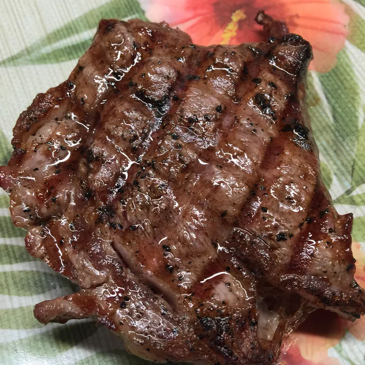

Ribeye
Home

Description
Salting the ribeye steak two days prior to cooking brines the steak, helps tenderize it, and adds rich flavor.
Ingredients
- 6 8oz. rib-eye steaks
- 1 tbsp kosher salt
- 1-1/2 tbsp black pepper
- 1 tbsp vegetable oil
- 2 tbsp unsalted butter
Steps
- Salt both sides of steaks with 1/2 teaspoon Diamond Crystal kosher salt per steak. Place steaks in an airtight container and refrigerate 48 hours.
- Remove steaks from the refrigerator about 30 minutes prior to cooking. Sprinkle both sides of steaks with black pepper.
- Heat a cast-iron skillet over medium-high heat until very hot. Add vegetable oil; heat until oil shimmers.
- Carefully place steaks in skillet. Cook until brown and hard-seared on one side, 4 to 5 minutes.
- Flip steaks; top with 1 teaspoon butter. Cook until desired doneness, or 3 to 4 minutes more. You may need to cook steaks in batches depending on the size of your cast-iron skillet. Keep cooked steaks in a 170 degrees F ( 77 degrees C) oven until ready to serve.